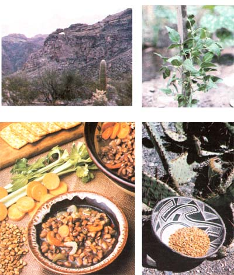

CLOCKWISE FROM LEFT: Once the yearly flash floods bring water and trace minerals to the mouths of arroyos such as the one pictured here, Papago gardeners plant tepary seeds in the enriched earth .... The tepary bean's plant doesn't seem to differ much-in appearance, at least from those of our more common legumes . . . . The traditional crop displayed in a beautiful Native American basket .... And here's a ""modern"" bowl of hearty and delicious tepary bean soup.